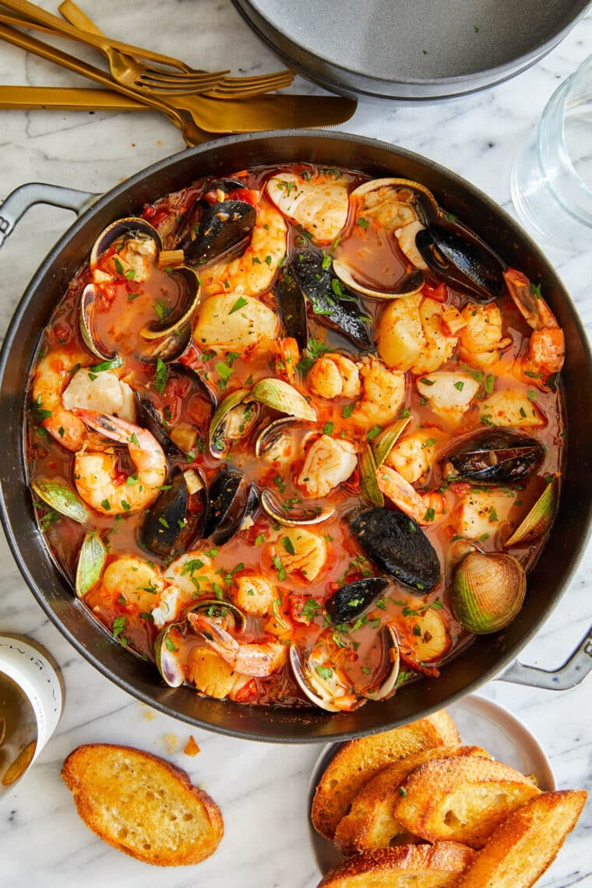

Cioppino

Description:
This cioppino is a wonderful seafood stew! Serve with a loaf of warm, crusty bread for sopping up the delicious broth!
Ingredients:
- ¾ cup butter
- 2 onions, chopped
- 1 bunch of fresh parsley
- 2 cloves of garlic
- 2 cans of stewed tomatoes
- 2 cans of chicken broth
- 2 cups of white wine
- 1 cup of water
- 2 bay leaves
- 1 tablespoon dried basil
- ½ teaspoon dried thyme
- ½ teaspoon dried oregano
- 1 ½ pounds cod fillets, cubed
- 1 ½ pounds large shrimp - peeled and deveined
- 1 ½ pounds bay scallops
- 18 small clams
- 18 mussels, cleaned and debearded
- 1 ½ cups crabmeat
Home